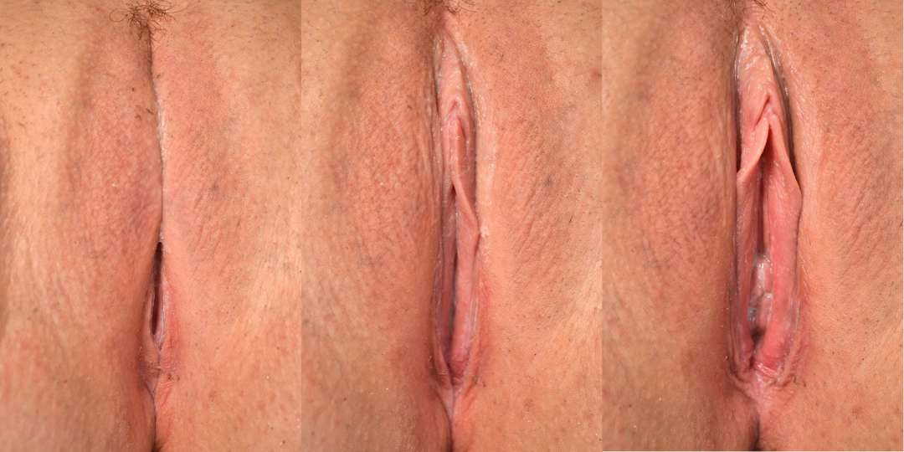
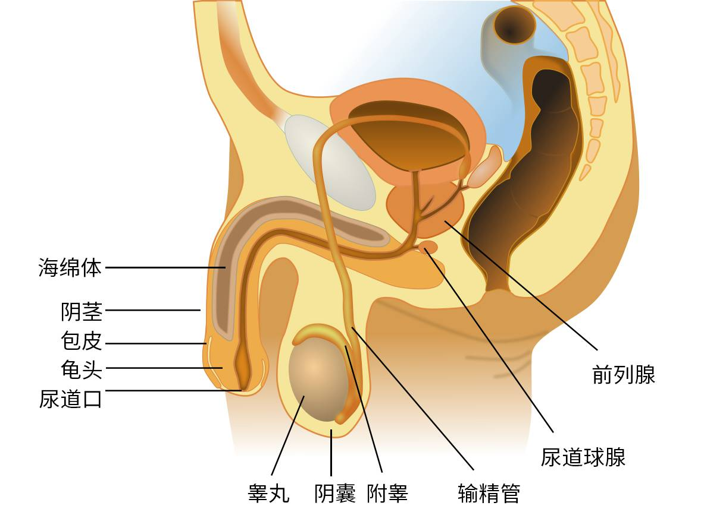

生殖系统是生物体内的和生殖密切相关的器官（生殖器）成分的总称。
女性生殖系统
图 1 张开的女性阴部（外生殖器）
图 2 女性生殖系统
生殖器
如图 1 展示为用手张开的女性阴部，为女性生殖系统的重要组成部分。
女性的生殖系统分为外生殖器（即上图所示的外阴）和内生殖器。
外部可见的外生殖器包括
- 阴唇：分为大阴唇和小阴唇，阴唇的主要作用是保护阴蒂以及尿道口与阴道口；
- 阴蒂：位于小阴唇汇合处、尿道口上方的突起，可提供性快感（详见性行为章节）；
- 阴道口：阴道开口的缝隙，有处女膜围绕或部分覆盖（若未消失）。
处于体内的内生殖器包括
- 卵巢：产生卵子和女性激素；
- 输卵管：卵子排出的通道；
- 子宫：可供胎儿在出生前生长发育之处；
- 子宫颈（又称宫颈）：子宫的末端；
- 阴道：产道，胎儿出生经过的通道。
卵巢可产生生殖细胞卵子，可与男性的精子结合成受精卵产生后代。
受到外界刺激时，阴蒂有可能会勃起变得大而坚硬，阴唇肿胀，阴道变得湿润。
阴蒂会在夜间或晨间刚睡醒时自发勃起，是正常现象。
图 3 女性的性兴奋
处女膜
处女膜是一层位于阴道口的环状黏膜组织，包围或部分覆盖阴道口，在中央有一直径为1～1.5厘米的小孔。
囿于“处女”二字，处女膜不完整被广泛误认为是发生过初次阴道性行为的依据。事实上，包括创伤、自慰、医学检查、运动、发生性行为等都有可能导致处女膜的破裂，导致暂时性的出血和疼痛。
许多人认为处女膜是一层覆盖于阴道口的完整膜，这一观点是错误的，只有少数女性的处女膜上没有空隙，病理学称之为“闭锁”，而且这种情况通常需要手术治疗。
您可以通过点击下方按钮阅读美国家庭医师学会（AAFP）的文章《评估儿童的性虐待》（Evaluating the Child for Sexual Abuse）查看有关处女膜的照片。
在该文中：
- 图 2（FIGURE 2）是一位 11 岁女孩呈仰卧、俯卧状态的检查照片；
- 图 3 是新月形（A）、环形（B）、袖口形（C）和中间分隔形（D）的照片，均属于常见的处女膜形状；
- 图 4 是青春期前后（分别是左图和右图）处女膜的变化；
- 图 6 是处女膜破损和不存在的情形。
月经
月经，又称大姨妈、生理期、例假，是指女性血液或黏膜定期从子宫内膜经阴道排出体外的现象。
卵子由卵巢排出，子宫中长出一层内膜以培育卵子。在没有受精卵着床的情况下，内膜将分解并经阴道排出体外。
月经通常在12-15岁之间首次出现，大约于45-55岁时结束（这段时间又称为更年期、绝经期）。月经来临时，经血会持续流出约2-7天。
高达80%女性曾表示在月经开始前出现部分症状——常见症状包含长出粉刺、乳房变得柔软、感到疲惫、容易发怒与情绪改变。由于这些症状会干扰正常生活，因此称为经前综合症。20-30%女性会得到此症，其中的3-8%则较为严重。
经痛（亦称痛经）是女性月经来潮时产生的疼痛，也称生理痛。主要可分为两种：原发性经痛及续发性经痛两种。在疼痛时，服用一些药物（如布洛芬）通常可以带来缓解。
- 原发性经痛发生在于女性开始出现规则性月经时，其经痛大都是发生在月经的前1~2天，经痛的表现为痉挛、绞痛。多数的经痛在月经的第二至三天会自动缓解，而且大部分的女性也会在年龄稍长或是生过孩子后会自然的减轻经痛或是消失经痛。疼痛通常发生在月经开始之前的几个小时或月经开始以后，而且会持续1至3天，耻骨上会有痉挛性的疼痛，有时会伴随着腰酸，疼痛也可能牵连到大腿，恶心、呕吐、腹泻的情况也很常见，严重者甚至可能晕倒，按压肚子、按摩腹部或改变姿势会减少经痛的症状。
- 继发性经痛出现在女性有一段时间没有经痛的月经之后，或是本来月经来潮的不舒服症状渐渐的转变成为明显的腹痛。其表现的疼痛比较多样性，有时表现在痉挛、绞痛，有时表现在钝痛、胀痛甚至出现剧烈的刺痛。痛的性质大部分时间会随时年纪而减轻，但有时反而会恶化。疼痛通常在月经来潮前的1~2周就开始，而且会持续到出血停止之后几天才慢慢缓解，病因相当的多，子宫内膜异位是最常见的原因，其次是子宫的腺肌症或是子宫内避孕器造成的疼痛等等。
女性生理用品及用法
为吸收月经的经血，或是不让经血留于体外，通常会使用卫生巾、卫生棉条等生理用品。
除了少部分特殊用途较厚的卫生巾之外，大部分的卫生巾都有封膜，使用前要先将封膜撕开，把卫生巾取出。然后将背胶上和侧翼的贴条撕下，平放在内裤的适当位置，接着将侧翼反折到内裤的另一面贴上即可。
男性生殖系统
图 4 亚洲男性外生殖器（疲软状态，包皮覆盖）
图 5 阴茎（系带面，包皮翻开）
生殖器
如图为男性阴茎。阴茎是男性排尿和交配的器官。
男性生殖系统可以分为外生殖系统以及内生殖系统。
外生殖系统包括
- 阴茎：男性排尿和交配的器官；
- 阴囊：一层薄皮肤，包围并保护睾丸。
内生殖系统包括
- 睾丸：用于产生精子和分泌雄激素，精子可与女性的卵子结合形成受精卵；
- 附睾：精子在此成熟；
- 输精管：输送精子的通道；
- 精囊：产生精液的主要成分；
- 前列腺：产生精液的主要成分前列腺液；
- 尿道球腺：产生可润滑龟头及尿道的尿道球腺液。

图 6 男性生殖系统
阴茎在受到刺激时会勃起。阴茎勃起过程中会充血，可迅速地增大、变硬。完全勃起的情况下，阴茎体部会呈坚硬状态。
研究结果一定共识认为成年人类阴茎的平均勃起长度约为12.9-15厘米，95％的成年男性的阴茎勃起长度介于10.2-19.7厘米之间。
阴茎会在夜间或晨间刚睡醒时自发勃起，是正常现象。
阴茎上覆盖有包皮作为皮肤，幼儿的包皮较长，包着整个龟头，包皮口也小。随着年龄的增长，包皮逐渐退缩，包皮口也逐渐扩大。青春期后包皮平时可能覆盖部分或全部龟头，阴茎勃起后可以自动或者用手轻易退到冠状沟后面。
睾丸主要作用是产生精子和分泌雄性激素（主要是睾酮）。
图 7 男性的性兴奋
精液
精液一般是含有精子的流质，外观为半透明白色粘稠状，有类似石楠花的气味，在射出后会凝固呈胶冻状，一段时间后会液化。
在受到性刺激一段时间后，包含有精子的精液会经勃起的阴茎的尿道口射出，此过程称为射精。
图 8 精液（未液化）
遗精
男性的遗精（又称梦遗）是指在睡眠过程中自发地性高潮，由此引发的射精现象。
自慰的频率可能与梦遗的频率有一定相关性，一般来说梦遗的频率较高的男性可能自慰的频率会较低。
⭐ 你的 支持 可以鼓励知性的维护与运营。
参考资料
- 姚锦仙,程红 编.健康的性[M].北京:高等教育出版社,2015.3 - ISBN 978-7-04-041738-8
- 万学红,卢雪峰 主编.诊断学[M].北京:人民卫生出版社,2018 - ISBN 978-7-117-26374-0
- 小知识：女性生殖系统概述 – 默沙东手册
- 阴唇 - 维基百科
- 阴道口 - 维基百科
- 处女膜 - 维基百科
- 处女膜 - 术语在线（全国科学技术名词审定委员会）
- 处女膜闭锁 - 术语在线（全国科学技术名词审定委员会）
- Vagina - Wikipedia
- 女性生殖系统 - 维基百科
- 了解月经周期 - Apple《健康》App
- 女阴 - 维基百科
- 卫生巾 – 维基百科
- 男性生殖系统 - 维基百科
- 睾丸 - 维基百科
- 人类阴茎 - 维基百科
- 精液 – 维基百科
- 晨勃 – 维基百科
版权
正文内容
本文内容（包括图片在内的整体）以知识共享 署名-相同方式共享 4.0协议发布。本文部分内容摘自维基百科，相关链接附于参考资料。
本文中在“处女膜”部分引述美国家庭医师学会的相关部分在转载修改时不得直接将 PDF 或图片直接插入于文章中，因为根据该学会相关协议，相关资源需要书面授权使用。而在联系美国家庭医师学会后，对方拒绝了授权。
在线查看该材料的人可以将其打印一份，并且只能将其用作个人或非商业参考。 除非获得美国家庭医师学会的书面授权，否则不得以任何方式（无论现在已有还是以后发明）下载、复制、打印、存储、传输或复制本资料。
A person viewing it online may make one printout of the material and may use that printout only for his or her personal, non-commercial reference. This material may not otherwise be downloaded, copied, printed, stored, transmitted or reproduced in any medium, whether now known or later invented, except as authorized in writing by the AAFP.
图片来源
本页图片来自互联网，且均在版权合规要求下使用。
图 6 作者亦以知识共享 署名-相同方式共享 4.0协议发布该图片。
| 图片编号 | 作者 | 来源 |
|---|---|---|
| 封面 | TOMOKO UJI | Unsplash |
| 图 1 | GnolizX Sci-img |
Wikimedia Commons |
| 图 2 | Witcater BruceBlaus |
Wikimedia Commons |
| 图 3 | Fotomannforever | Wikimedia Commons |
| 图 4 | Ganlin88 | Wikimedia Commons |
| 图 5 | Cheywen | Wikimedia Commons |
| 图 6 | Tsaitgaist alt.sex FAQ |
Wikimedia Commons |
| 图 7 | ShavedCock | Wikimedia Commons |
| 图 8 | X.Ran Lin | 拍摄者授权提供 |
{kind=link}
{kind=link}
{kind=link}
.jpg){kind=link}
{kind=link}
{kind=link}
{kind=link}